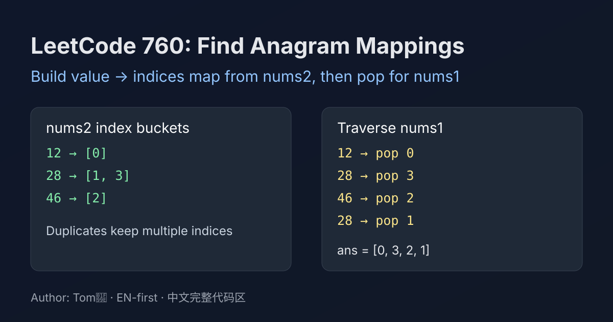

LeetCode 760: Find Anagram Mappings (Value to Indices Map + Pop)
LeetCode 760ArrayHash MapToday we solve LeetCode 760 - Find Anagram Mappings.
Source: https://leetcode.com/problems/find-anagram-mappings/

English
Problem Summary
Given two arrays nums1 and nums2 where nums2 is an anagram of nums1, return an array ans such that ans[i] is an index j where nums1[i] == nums2[j].
Key Insight
Build a map from value to all indices where it appears in nums2. For each value in nums1, pop one stored index. This naturally handles duplicates.
Brute Force and Limitations
For each nums1[i], scan nums2 to find an unused matching position. This is O(n^2) and needs extra used-marking.
Optimal Algorithm Steps
1) Traverse nums2, append each index into a list by value.
2) Traverse nums1.
3) For each value, pop one index from its list and store in result.
Complexity Analysis
Time: O(n).
Space: O(n).
Common Pitfalls
- Using a single index per value and breaking duplicates.
- Forgetting to remove used indices.
- Returning values instead of indices.
Reference Implementations (Java / Go / C++ / Python / JavaScript)
class Solution {
public int[] anagramMappings(int[] nums1, int[] nums2) {
Map<Integer, Deque<Integer>> pos = new HashMap<>();
for (int i = 0; i < nums2.length; i++) {
pos.computeIfAbsent(nums2[i], k -> new ArrayDeque<>()).push(i);
}
int[] ans = new int[nums1.length];
for (int i = 0; i < nums1.length; i++) {
ans[i] = pos.get(nums1[i]).pop();
}
return ans;
}
}func anagramMappings(nums1 []int, nums2 []int) []int {
pos := map[int][]int{}
for i, v := range nums2 {
pos[v] = append(pos[v], i)
}
ans := make([]int, len(nums1))
for i, v := range nums1 {
lst := pos[v]
idx := lst[len(lst)-1]
pos[v] = lst[:len(lst)-1]
ans[i] = idx
}
return ans
}class Solution {
public:
vector<int> anagramMappings(vector<int>& nums1, vector<int>& nums2) {
unordered_map<int, vector<int>> pos;
for (int i = 0; i < (int)nums2.size(); i++) {
pos[nums2[i]].push_back(i);
}
vector<int> ans(nums1.size());
for (int i = 0; i < (int)nums1.size(); i++) {
auto& lst = pos[nums1[i]];
ans[i] = lst.back();
lst.pop_back();
}
return ans;
}
};class Solution:
def anagramMappings(self, nums1: list[int], nums2: list[int]) -> list[int]:
pos: dict[int, list[int]] = {}
for i, v in enumerate(nums2):
pos.setdefault(v, []).append(i)
ans = []
for v in nums1:
ans.append(pos[v].pop())
return ans/**
* @param {number[]} nums1
* @param {number[]} nums2
* @return {number[]}
*/
var anagramMappings = function(nums1, nums2) {
const pos = new Map();
for (let i = 0; i < nums2.length; i++) {
const v = nums2[i];
if (!pos.has(v)) pos.set(v, []);
pos.get(v).push(i);
}
const ans = new Array(nums1.length);
for (let i = 0; i < nums1.length; i++) {
const list = pos.get(nums1[i]);
ans[i] = list.pop();
}
return ans;
};中文
题目概述
给定两个数组 nums1 和 nums2，其中 nums2 是 nums1 的异位数组（元素及出现次数一致，顺序不同）。需要返回一个下标数组 ans，使得 nums1[i] == nums2[ans[i]]。
核心思路
先把 nums2 中每个数出现的位置都记录下来（值 -> 下标列表）。再遍历 nums1，每次取并弹出一个下标即可。这样重复元素也能正确匹配。
暴力解法与不足
对 nums1 的每个元素去 nums2 线性查找未使用位置，复杂度 O(n^2)，还需要额外标记是否已用。
最优算法步骤
1）遍历 nums2，建立值到下标列表的映射。
2）遍历 nums1。
3）从对应列表中弹出一个下标，写入答案。
复杂度分析
时间复杂度：O(n)。
空间复杂度：O(n)。
常见陷阱
- 只记录一个下标，导致重复值覆盖。
- 不弹出已使用下标，造成重复使用同一位置。
- 返回了元素值而不是下标。
多语言参考实现（Java / Go / C++ / Python / JavaScript）
class Solution {
public int[] anagramMappings(int[] nums1, int[] nums2) {
Map<Integer, Deque<Integer>> pos = new HashMap<>();
for (int i = 0; i < nums2.length; i++) {
pos.computeIfAbsent(nums2[i], k -> new ArrayDeque<>()).push(i);
}
int[] ans = new int[nums1.length];
for (int i = 0; i < nums1.length; i++) {
ans[i] = pos.get(nums1[i]).pop();
}
return ans;
}
}func anagramMappings(nums1 []int, nums2 []int) []int {
pos := map[int][]int{}
for i, v := range nums2 {
pos[v] = append(pos[v], i)
}
ans := make([]int, len(nums1))
for i, v := range nums1 {
lst := pos[v]
idx := lst[len(lst)-1]
pos[v] = lst[:len(lst)-1]
ans[i] = idx
}
return ans
}class Solution {
public:
vector<int> anagramMappings(vector<int>& nums1, vector<int>& nums2) {
unordered_map<int, vector<int>> pos;
for (int i = 0; i < (int)nums2.size(); i++) {
pos[nums2[i]].push_back(i);
}
vector<int> ans(nums1.size());
for (int i = 0; i < (int)nums1.size(); i++) {
auto& lst = pos[nums1[i]];
ans[i] = lst.back();
lst.pop_back();
}
return ans;
}
};class Solution:
def anagramMappings(self, nums1: list[int], nums2: list[int]) -> list[int]:
pos: dict[int, list[int]] = {}
for i, v in enumerate(nums2):
pos.setdefault(v, []).append(i)
ans = []
for v in nums1:
ans.append(pos[v].pop())
return ans/**
* @param {number[]} nums1
* @param {number[]} nums2
* @return {number[]}
*/
var anagramMappings = function(nums1, nums2) {
const pos = new Map();
for (let i = 0; i < nums2.length; i++) {
const v = nums2[i];
if (!pos.has(v)) pos.set(v, []);
pos.get(v).push(i);
}
const ans = new Array(nums1.length);
for (let i = 0; i < nums1.length; i++) {
const list = pos.get(nums1[i]);
ans[i] = list.pop();
}
return ans;
};
Comments